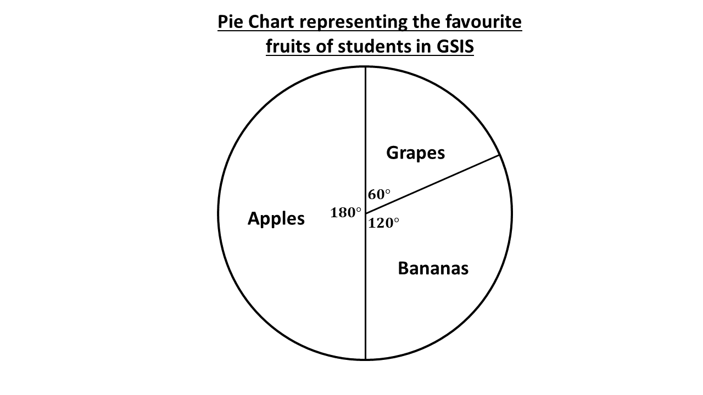

Basic 7
Lesson 1:
Tallies
Lesson 2:
Frequency Tables
Lesson 3:
Pie Chart
Lesson 4:
Double Bar Graphs
Pie Chart
When data has been recorded and organised into a frequency table, we need to present it in a certain way in order to draw conclusions.
One of the ways to represent data is the BAR CHART that we read on in the previous lesson.
Another way of representing data is through the use of a pie chart.
What is a Pie Chart
A pie chart is a circular chart divided into sectors. Each sector represents a part or proportion of the total data given.
A pie chart can also be said as a type of graph that presents data in a circular form, with each slice of the circle (the sector) representing a fraction or proportion of the whole.
Below is an example of a pie chart representing student's favourite subjects in Good Shepherd International School.

Uses of the Pie Chart
The sectors in the circle are how we visually represent parts or categories of a whole data using a pie chart. This makes comparison between the various categories in data easy, and helps in decision making.
Pie charts are used in various places in real life.
- They are used in business to represent a distribution of monthly budgets, yearly budgets, etc.
- They are used to display results of preferences in a survey.
- One can also use pie charts to represent the time spent on their daily activities.
- You can also use pie charts to represent how much of your total money you spend on the things you buy at school.
Parts of the Pie Chart
The pie chart is made up of the following:
- The circle
- Sectors
- Angles
This represents the total data given. A full circle is similar to one whole (1), as a circle is made up of \(360^\circ\) and it's equivalence in fraction terms is:
\(\Rightarrow \frac{360^\circ}{360^\circ}\)
\(\Rightarrow 1\)
The sector is the slice or part of the circle representing the various categories in the data.
Also called the angle of sector. The angle is proportional to the value of the category in the data.
We will usually express the angle as a fraction of the angle of the full circle (\(360^\circ\)).
Angle of Sector
The formular for the angle of sector is given as below:
Angle of sector \(= \frac{frequency}{total \ frequency} \times 360^\circ\)
To find the angle of sector for any given category in the data, we express the frequency (or value of the category), say 2, as a fraction of the total frequency of the data, say 36, and multiply the fraction by the degree of a full circle (\(360^\circ\)).
In this case we have:
Angle of sector \(= \frac{2}{36} \times 360^\circ\)
\(\Rightarrow 2 \times 10^\circ\)
\(\Rightarrow 20^\circ\)
\(\therefore\) the angle of sector for the category is \(20^\circ\)
Example 1
Mrs. Agyemang, a school caterer, conducted a survey on 50 students to know their favourite fruits. Below was the results obtained on her survey:
- Apples: 30 votes
- Bananas: 20 votes
- Grapes: 10 votes
Total votes \(= 60\)
To present this information in a pie chart, we will first need to calculate the angle of sector for each of the category of fruits, then represent the various angles in the circle as done below:
Angle of sector \(= \frac{frequency}{total \ frequency} \times 360^\circ\)
Angle of sector for apples
\(\Rightarrow \frac{30}{60} \times 360^\circ\)
\(\Rightarrow \frac{1}{2} \times 360^\circ\)
\(\Rightarrow 180^\circ\)
\(\therefore\) angle of sector for apples is \(180^\circ\)
Angle of sector for bananas
\(\Rightarrow \frac{20}{60} \times 360^\circ\)
\(\Rightarrow \frac{1}{3} \times 360^\circ\)
\(\Rightarrow 120^\circ\)
\(\therefore\) angle of sector for bananas is \(120^\circ\)
Angle of sector for grapes
\(\Rightarrow \frac{10}{60} \times 360^\circ\)
\(\Rightarrow \frac{1}{6} \times 360^\circ\)
\(\Rightarrow 60^\circ\)
\(\therefore\) angle of sector for grapes is \(60^\circ\)
See how the total angles add up to \(360^\circ\)?
\(180^\circ + 120^\circ + 60^\circ = 360^\circ\)
The total angle of sectors should always add up to a full circle, which is \(360^\circ\).
Remember:
We use the protractor to draw the angle of sectors in the circle.
Watch the video below to learn how to use the protractor.

The above is a pie chart using the angle of sectors calculated.
Try Test
In a day, Araba spends 4 hours studying, 2 hours playing, 8 hours sleeping and 2 hours having meals.
Represent the data above in a pie chart.